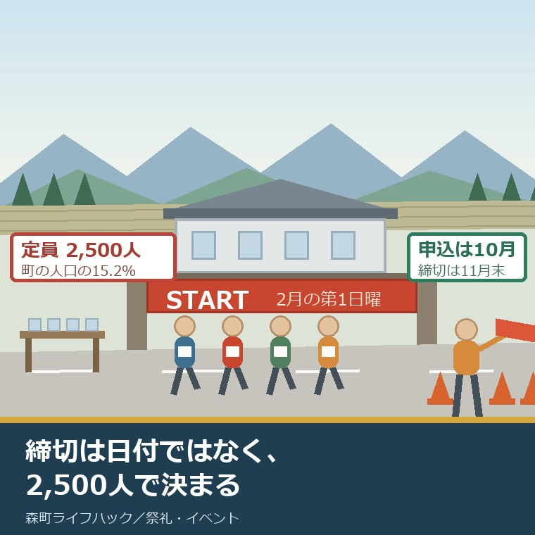
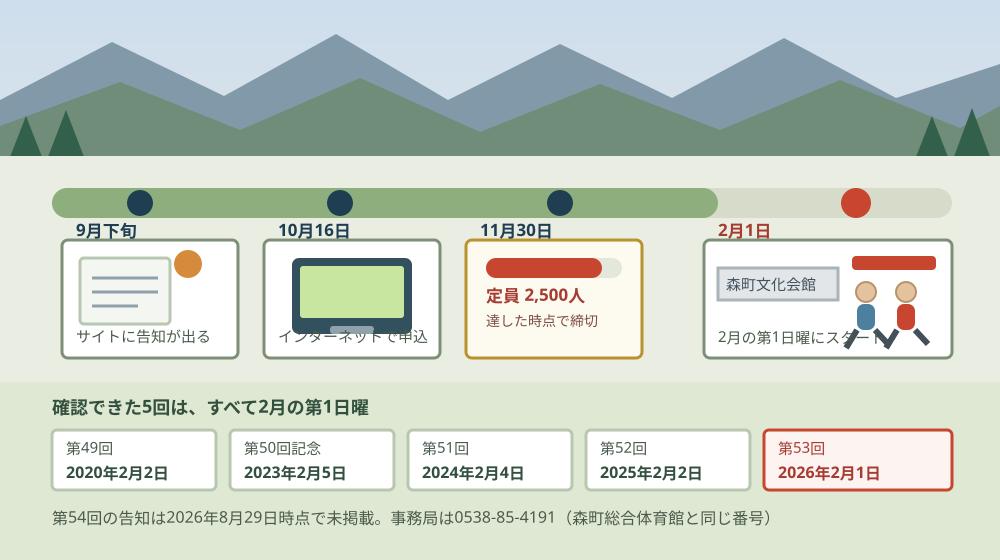
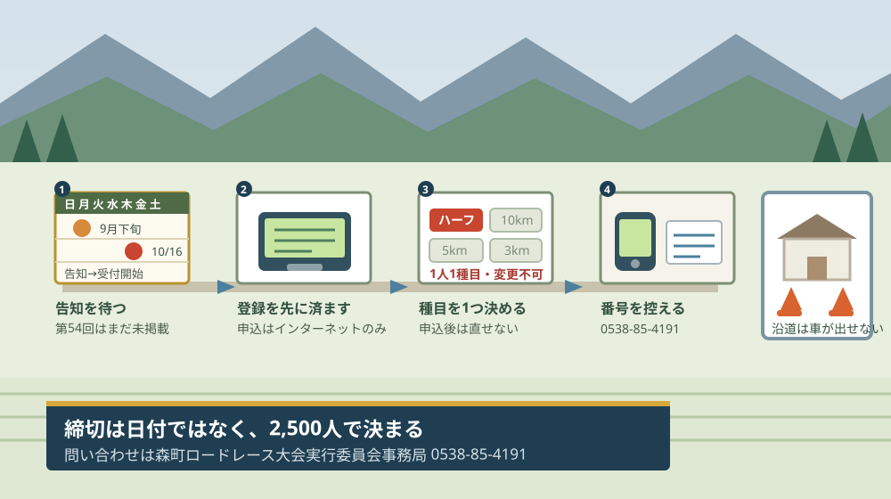

森町ロードレース大会の申し込み｜定員2,500人と例年10月

この記事の要点
Q. 森町のロードレース大会って、いつから申し込めるんですか。
A. 2026年8月29日時点で、第54回の告知はまだ出ていません。直近2回は10月16日に受付開始、締切は11月30日でした。定員2,500人、申込はスポーツエントリーからインターネットのみです。事務局は0538-85-4191（森町総合体育館と同じ番号）です。
静岡県周智郡森町（遠州森町）で、町の外から最も多くの人が来る日は、秋の祭りではないかもしれません。2月の日曜の朝、森町文化会館の前に2,500人が並ぶ日があります。森町ロードレース大会です。
私は磐田市で小さな不動産業を営みながら、森町の空き家・農地・実家じまいのご相談を受けています。走る側ではなく、沿道に家を持っている側・支える側から、この大会を数字で見ます。
今日は2026年8月29日です。第53回はすでに終わりました。2026年2月1日の日曜に開かれ、記録は2026年2月6日に森町体育協会のサイトで公開されています。
そして、第54回の告知は、今日の時点でまだ出ていません。この記事は、出るのを待っている人のために、直近5回の申込の形を並べたものです。
公式情報から確定できること
2026年8月29日時点で、森町体育協会・スポーツエントリー・森町の公表ページから確認できたことを順に並べます。出典は記事の末尾に載せています。
一つ目。第53回森町ロードレース大会は、令和8年（2026年）2月1日の日曜に開かれました。雨天決行です。開催のお知らせが森町体育協会のサイトに出たのは2025年9月27日です。
二つ目。発着点は森町文化会館です。スポーツエントリーの大会ページに記載があります。ハーフは周回コースで、平坦で走りやすいコースだと説明されています。
三つ目。スタート時刻は9時20分から9時50分までの30分間に5つ並びます。5kmが9時20分、ハーフが9時30分、3km一般と中学生が9時40分、3km小学生が9時45分、10kmが9時50分です。
四つ目。種目はハーフ・10km・5km・3kmの4つです。部門は、ハーフが一般と高校生、10kmが一般と高校生、5kmが一般と高校生、3kmが一般（高校生を除く）・中学生・小学生。第53回では5kmの中学生部門はありませんでした。
五つ目。参加費は、ハーフが一般5,000円・高校生3,000円、10kmが一般4,000円・高校生3,000円、5kmが一般4,000円・高校生3,000円、3kmが一般3,500円・中学生2,000円・小学生2,000円です。3km小学生は、同伴者1名につき2,000円がかかります。
六つ目。定員は2,500人です。森町体育協会の告知には「申込期限：10月16日(木)から11月30日(日) ※ただし定員(2500人)に達した時点で締切」と記されています。
七つ目。申込はインターネットのみです。スポーツエントリーからの申込に一本化されており、1人1種目、申込後の競技種目の変更はできません。参加資格は一般アマチュア競技者に限られます。
八つ目。第53回の受付は、実際には12月10日まで延長されました。スポーツエントリーのページに表示されているエントリー期間は「2025年10月16日(木)〜2025年12月10日(水)」です。延長の告知は2025年11月26日に出ています。
九つ目。前年の第52回も延長されています。第52回は令和7年（2025年）2月2日の開催で、受付は2024年10月16日から11月30日まで。これが2025年1月5日まで延びました。
十番目。直近5回の開催日は、すべて2月の第1日曜日です。第49回2020年2月2日、第50回記念2023年2月5日、第51回2024年2月4日、第52回2025年2月2日、第53回2026年2月1日。私が確認できた5回に例外はありませんでした。
十一番目。申込の開始日は10月中旬と11月1日の2つの型があります。第49回は2019年10月18日、第50回記念は2022年11月1日、第51回は2023年11月1日、第52回と第53回はいずれも10月16日でした。締切はどの回も11月中旬から下旬です。
十二番目。出場者の駐車場は事前予約制です。スポーツエントリーで申し込むときに「自家用車」を選んだ人だけが対象で、配分は先着順ではなく、交通規制と参加種目を考慮して決めると案内されています。
十三番目。応援する方の駐車場は、森町役場と森町総合体育館です。第53回の告知にそう記されています。
十四番目。大会の事務局は森町ロードレース大会実行委員会事務局です。所在地は〒437-0215 静岡県周智郡森町森92-8、電話0538-85-4191、ファックス0538-85-1117です。
十五番目。この住所と電話番号は、森町総合体育館と同じです。森町の体育施設のページによると、森町総合体育館「森アリーナ」の所在地は森町森92番地の8、電話は0538-85-4191。社会教育課社会体育係の連絡先も同じ番号です。
十六番目。森町の公表ページには、ロードレース大会の案内が見当たりませんでした。スポーツのページも、社会体育係のページも、森町の体育施設のページも、大会には触れていません。「森町体育協会」の名前が出てくるのは、森町スポーツ大会出場激励金のページ（2026年7月31日更新）だけです。
十七番目。参加者数・完走者数は、どこにも公表されていませんでした。第53回の記録は2026年2月6日に種目別のPDFで公開されていますが、総数の記載はありません。第51回・第52回も同じです。ここは未確認のまま残します。

この絵で描きたかったのは、申込から本番までの距離です。第53回の場合、受付開始の10月16日から開催日の2月1日まで108日ありました。締切の11月30日から数えても63日です。
もう一つ描いたのは、帯の下に並べた5つの日付です。第49回から第53回まで、確認できた5回はすべて2月の第1日曜でした。同じ形なら次は2027年2月7日ですが、これは私の推測で、公表された日付ではありません。
直近5回の申込を、1枚の表にする
森町体育協会の告知とスポーツエントリーの表示から、回ごとの日付を並べ直します。出典は列ごとに末尾に書きました。
| 回 | 開催日 | 受付開始 | 当初の締切 | 延長後 | 定員 |
|---|---|---|---|---|---|
| 第49回 | 2020年2月2日（日） | 2019年10月18日 | 2019年11月18日 | 記載なし | 2,500人 |
| 第50回記念 | 2023年2月5日（日） | 2022年11月1日 | 2022年11月30日 | 記載なし | 2,000人 |
| 第51回 | 2024年2月4日（日） | 2023年11月1日 | 2023年11月30日 | 記載なし | 2,500人 |
| 第52回 | 2025年2月2日（日） | 2024年10月16日 | 2024年11月30日 | 2025年1月5日 | 2,500人 |
| 第53回 | 2026年2月1日（日） | 2025年10月16日 | 2025年11月30日 | 2025年12月10日 | 2,500人 |
この表でいちばん目につくのは、右から2列目です。直近2回は、どちらも締切が延びています。第52回は11月30日から1月5日へ36日、第53回は11月30日から12月10日へ10日。
もう一つ気づくのは、第50回記念の定員です。2,000人で、しかも静岡県在住者に限られていました。他の回の2,500人と比べると500人少ない。記念の回だからこそ、町の中に絞ったという読み方ができます。
受付開始日は、2019年が10月18日、2022年と2023年が11月1日、2024年と2025年が10月16日です。直近2回が同じ10月16日で揃っているのが、いまのところ唯一の手がかりです。
2,500人を、町の人口で割ってみる
ここからは割り戻しです。分母を先に書きます。森町の人口は、住民基本台帳による2026年8月1日現在で16,422人、世帯数は6,763世帯です。
定員2,500人を16,422人で割ると、町の人口の15.2パーセントにあたります。言い換えると、町の人口の約6.6人に1人と同じ数のランナーが、2月の日曜の朝に町へ入ってくるということです。
この数字を、私は大きいと考えます。森町の秋の産業祭は文化会館のお祭り広場と駐車場を使いますが、ロードレースは町の道路そのものを使います。会場を借りるのではなく、生活の動線を数時間止める形の催しです。町のどの地区に何人住んでいるかは森町の地区別人口にまとめました。
参加費のほうも割っておきます。いちばん高いハーフ一般の5,000円と、いちばん安い3km中学生・小学生の2,000円の差は3,000円、2.5倍です。高校生はハーフ・10km・5kmのどれでも3,000円で統一されています。
親子で3kmに出る場合の計算もしておきます。小学生2,000円に同伴者1名2,000円で、合わせて4,000円です。ハーフ一般の5,000円に近い額になります。走るのは3kmでも、家計から出ていく金額はハーフ1本とほとんど変わりません。
良い点：この大会の、よくできているところ
第53回の要項を1枚の書類として見たとき、評価したい点が4つあります。順に書きます。
一つ目。申込がインターネット1本に絞られていることです。郵便局へ行く必要も、振込用紙を待つ必要もありません。運営する側から見ても、名簿づくりの手間が減ります。2,500人規模で紙の申込を併用したら、事務局の負担は何倍にもなります。
二つ目。高校生の参加費が3種目とも3,000円で統一されていることです。ハーフでも10kmでも5kmでも同じ額。種目選びのときに、値段で迷わずに済みます。部活動で複数の選択肢がある高校生にとって、これは分かりやすい設計です。
三つ目。3km小学生に同伴者の枠が用意されていることです。1名につき2,000円。小学生が1人で走る前提にしていない。親子で申し込める形になっているのは、参加のしやすさに直結します。
四つ目。出場者の駐車場が、先着順ではなく交通規制と参加種目を考慮して配分されることです。先着順にすると、遠方から早く来た人が近い駐車場を取ることになります。走る時刻が違う人を、時刻に合わせて配置するほうが、当日の流れは確実に良くなります。
注文したい点：申し込む側・沿道の側から見て足りないところ
ここからは、申し込む側と、沿道に家がある側の立場での注文を4つ書きます。批判ではなく、外から探した側の報告です。
一つ目。森町の公表ページに、大会のページが残っていないことです。町の名前を冠した大会で、事務局の電話番号は森町総合体育館と同じなのに、森町の公表ページからは大会にたどり着けません。町の外にいる家族が「森町 ロードレース」で調べたとき、公式サイトが答えを持っていない状態です。
二つ目。参加者数・完走者数が公表されていないことです。記録は種目別のPDFで出ているのに、総数がありません。定員2,500人に対して何人集まったのかが分からないと、締切が2回続けて延びた意味も読めません。
三つ目。締切延長の理由が書かれていないことです。第52回は1月5日まで、第53回は12月10日まで延びました。定員に届かなかったのか、受付の枠を広げただけなのか。申し込む側にとっては、来年の締切をどう見積もるかが変わります。
四つ目。発着点とコースが、体育協会の告知に書かれていないことです。森町文化会館が発着点であることも、スタート時刻も、スポーツエントリーの大会ページにしか載っていません。沿道に住んでいて、その日の朝に車を出せるかを知りたい人は、ランナー向けの申込サイトを開くことになります。交通規制の情報も同じ場所にあります。

この図で二段目に会員登録を置いたのには理由があります。申込がインターネットのみで、定員に達した時点で締切だからです。受付が始まってから登録を始めると、そのぶん遅れます。
三段目に種目の札を並べたのも同じ考え方です。1人1種目で、申込後の変更はできません。迷ったまま申し込むと、あとから直せない項目です。
対案・結論：今日、ご家族が確かめられること
第54回の告知が出ていない今日でも、進められることがあります。順番に5つ書きます。
一つ目。森町体育協会のサイトを、今日ブックマークしてください。第53回の告知は2025年9月27日に出ました。今日から数えると29日後にあたる日付です。第52回の告知は10月16日でしたから、9月下旬から10月中旬のどこかで出る可能性があります。
二つ目。スポーツエントリーの会員登録を、受付が始まる前に済ませてください。申込はここからのインターネット申込のみです。登録に必要な情報を先に埋めておけば、受付開始日に迷いません。
三つ目。出る種目を1つ決めてください。ハーフ、10km、5km、3km。1人1種目で、申し込んだあとの変更はできません。走る距離より先に、当日9時20分から9時50分のどのスタートに立つかを決めるという順序です。
四つ目。2027年2月の第1日曜を、家族の予定表に仮で入れてください。第49回から第53回までの5回はすべて2月の第1日曜でした。同じ形なら2027年2月7日です。ただしこれは私の推測で、公表された日付ではありません。
五つ目。実家が森町にあり、沿道かもしれない場合は、0538-85-4191を控えてください。森町ロードレース大会実行委員会事務局の番号で、森町総合体育館と社会教育課社会体育係も同じ番号です。当日の交通規制の範囲は、この番号で確かめられます。
ここまでやっても、出るかどうかを今日決める必要はありません。今日の成果は、告知が出る時期と、申込の入口と、事務局の番号が揃ったことです。この3つがあれば、告知が出た日に動けます。
家族に残す記録
確かめた内容は、その日のうちに1枚にまとめてください。この大会は毎年あるので、一度書いておくと来年そのまま使えます。
書き出す項目は6つです。①開催日 ②受付開始日と締切 ③出る種目と参加費 ④スタート時刻 ⑤駐車場の申込を済ませたか ⑥事務局の電話番号。回が変わっても同じ枠で埋められます。
加えて、確認できなかったことも同じ紙に残します。「第54回の告知は2026年8月29日時点で未掲載」「参加者数・完走者数は公表されていない」「締切延長の理由は公表されていない」の3つです。分からないことを書いておくと、来年その欄から確認を再開できます。
もう一つ、実家が沿道にあるかどうかを一行書き足してください。2月の第1日曜の午前中に、車が出せるか出せないか。これは通院の予定とも、介護のサービスの曜日とも関わります。走る人の記録ではなく、住んでいる人の一日として書いておく欄です。
大石の視点
ここからは公表資料の話ではなく、私がどう見ているかを書きます。体験談として書ける現場の一場面は手元にないので、意見として明示します。
私が第53回の要項を読んで最初に思ったのは、「事務局の電話番号が、町の社会体育係と同じだ」ということでした。森町森92-8、0538-85-4191。森町総合体育館の番号でもあります。
この一致は、この大会の性格をよく表しています。主催は町ではなく実行委員会。けれども受話器を取るのは、町の施設の中にいる人です。町の事業ではないが、町から完全に切り離されてもいない。地区の祭りの実行委員会と、形としてはよく似ています。
だから私はこう言い切ります。この大会を支えているのは、2,500人の受付と沿道の誘導を、通常の窓口業務と同じ場所で回している人たちです。ランナーが払う3,000円から5,000円は、その体制の対価でもあります。
一方で、私が引っかかっているのは締切の延長です。第52回は1月5日まで、第53回は12月10日まで。2年続けて延びています。定員2,500人に届いていないのか、単に受付の間口を広げたのか、公表資料からは読み取れませんでした。
ここは私にも分かりません。エントリー数が公表されていないので、判断する材料がないのです。推測として書くなら、私は「11月末の時点では埋まっていない回が続いている」と読んでいます。ただし裏付けはありません。
不動産の目で見て気になるのは、沿道のほうです。2,500人が走る朝、道路は数時間止まります。その間、沿道の家は車を出せません。持ち主が若いうちは「その日は出かけない」で済みますが、通院や介護の送迎が毎週入っている家では、そうもいきません。
実家じまいのご相談で私が聞くのは、たいていこういう種類の話です。年に一度の行事が、住んでいる人の一日をどう変えるか。祭りでも、産業祭でも、ロードレースでも構造は同じで、支える側と沿道の側は、たいてい同じ人です。
その上で、走ることを考えている方に一つだけ申し上げます。今年出ないと決めるのも、まったく構いません。ただ、告知が出るのはおそらく1か月から1か月半後です。出ないと決めるなら、告知を見てから決めてください。見る前に決めると、来年また同じところで迷います。
そして、沿道に実家がある方へ。私は「まだ決めない」という状態を、悪いことだとは思っていません。ただ、2月の第1日曜に家の前の道がどうなるかだけは、一度確かめておく価値があります。発着点になる文化会館については森町文化会館のコンサートと4公演に、同じ会館で開かれる産業祭については森町もりもり2万人まつりを支えるのは誰かに書きました。
まとめ
この記事で確認した事実を、最後に並べ直します。すべて2026年8月29日時点で公表されている内容です。
- 第54回森町ロードレース大会の告知は、2026年8月29日時点で森町体育協会のサイトに出ていない
- 第53回は2026年2月1日（日）開催、雨天決行。開催のお知らせは2025年9月27日に掲載
- 発着点は森町文化会館。ハーフは周回コースで平坦（スポーツエントリー）
- スタートは5km 9:20／ハーフ 9:30／3km一般・中学生 9:40／3km小学生 9:45／10km 9:50
- 種目はハーフ・10km・5km・3km。5kmの中学生部門は第53回では設定なし
- 参加費はハーフ一般5,000円・高校生3,000円、10kmと5kmが一般4,000円・高校生3,000円、3kmが一般3,500円・中学生2,000円・小学生2,000円。3km小学生は同伴者1名2,000円
- 定員2,500人。「定員(2500人)に達した時点で締切」と明記
- 申込はスポーツエントリーからのインターネット申込のみ。1人1種目、種目変更不可。参加資格は一般アマチュア競技者
- 第53回の受付は2025年10月16日開始、当初締切11月30日、実際は12月10日まで延長
- 第52回も2024年10月16日開始・11月30日締切から2025年1月5日まで延長
- 第49回から第53回までの5回は、いずれも2月の第1日曜に開催
- 出場者の駐車場は事前予約制。先着順ではなく交通規制と参加種目を考慮して配分
- 応援者の駐車場は森町役場と森町総合体育館
- 事務局は森町ロードレース大会実行委員会事務局（森町森92-8、0538-85-4191、FAX 0538-85-1117）。森町総合体育館・社会教育課社会体育係と同じ番号
- 森町の公表ページに大会の案内は見当たらず、「森町体育協会」の名は森町スポーツ大会出場激励金のページ（2026年7月31日更新）にのみ登場
- 参加者数・完走者数・締切延長の理由は、いずれも公表されていない
- 定員2,500人は森町の人口16,422人の15.2パーセント、約6.6人に1人（私の計算）
よくある質問
Q1. 森町ロードレース大会の申し込みは、いつから始まりますか。
A1. 2026年8月29日時点で、第54回の告知は森町体育協会のサイトに出ていません。直近2回は第52回・第53回とも10月16日に受付が始まり、当初の締切は11月30日でした。第53回の開催告知が出たのは2025年9月27日です。申込はスポーツエントリーからのインターネット申込のみで、1人1種目です。
Q2. 森町ロードレース大会の定員と参加費はいくらですか。
A2. 第53回の定員は2,500人で、達した時点で締切と案内されていました。参加費はハーフが一般5,000円・高校生3,000円、10kmと5kmが一般4,000円・高校生3,000円、3kmが一般3,500円・中学生と小学生が2,000円です。3km小学生は同伴者1名につき2,000円がかかります。
Q3. 森町ロードレース大会はどこを発着点にしていますか。
A3. 第53回の発着点は森町文化会館でした。スタートは5kmが9時20分、ハーフが9時30分、3km一般と中学生が9時40分、3km小学生が9時45分、10kmが9時50分です。応援する方の駐車場として森町役場と森町総合体育館が案内されていました。出場者の駐車場は事前予約制です。
最後に一つだけ。ここに書いた日付、参加費、定員、時刻、電話番号は、いずれも森町体育協会の告知、スポーツエントリーの大会ページ、森町の公表ページに記載されている値を、2026年8月29日に確認して書き写したものです。人口に対する割合と参加費の倍率は、私がその値を分母で割った概算であり、公表されている統計ではありません。第54回の開催日・受付期間・参加費・定員は、いずれも公表されていません。2027年2月7日という日付は、過去5回の並びから私が推測したもので、公表された予定ではありません。参加者数・完走者数・締切延長の理由も確認できていません。申し込む前に、必ず森町体育協会の最新の告知と、森町ロードレース大会実行委員会事務局（0538-85-4191）でご確認ください。
参考にした公式情報
- 第53回森町ロードレース大会開催のお知らせ／森町体育協会（2025年9月27日掲載、開催日が令和8年2月1日（日）で雨天決行であること、種目がハーフ・10km・5km・3kmで部門が一般・高校生・中学生・小学生に分かれること、参加費がハーフ一般5,000円／高校生3,000円、10km一般4,000円／高校生3,000円、5km一般4,000円／高校生3,000円、3km一般3,500円／中学生2,000円／小学生2,000円（小学生同伴者1名につき2,000円）であること、「申込期限：10月16日(木)から11月30日(日) ※ただし定員(2500人)に達した時点で締切」と記されていること、インターネット申込のみで1人1種目・種目変更不可であること、参加資格が一般アマチュア競技者に限られること、駐車場が事前予約制で先着順ではなく交通規制・参加種目を考慮して決定されること、応援者駐車場が森町役場及び森町総合体育館であること、事務局が森町ロードレース大会実行委員会事務局（〒437-0215 静岡県周智郡森町森92-8、電話0538-85-4191、ファックス0538-85-1117）であることを2026年8月29日に確認）
- 第53回森町ロードレース大会記録／森町体育協会（2026年2月6日掲載、ハーフ・10km・5km・3kmの種目別記録PDFが公開されていること、本文に参加者数・完走者数の記載がないことを2026年8月29日に確認）
- 第53回 森町ロードレース大会／スポーツエントリー（受付終了と表示されていること、発着点が森町文化会館であること、ハーフが周回コースで平坦であること、スタート時刻が5km 9:20・ハーフ 9:30・3km一般と中学生 9:40・3km小学生 9:45・10km 9:50であること、エントリー期間が2025年10月16日（木）から2025年12月10日（水）と表示されていること、定員が申込総数2,500名に達した時点で締切であることを2026年8月29日に確認）
- 森町の体育施設／静岡県森町（「更新日：2020年12月22日」と表示されていること、森町総合体育館「森アリーナ」の所在地が静岡県周智郡森町森92番地の8、電話が0538-85-4191であること、休館日が毎週火曜日（祝日の場合は翌日）と年末年始（12月28日から1月4日）であること、問い合わせが社会教育課社会体育係（〒437-0215 森町森92-8、電話0538-85-4191）であること、ロードレース大会への言及がないことを2026年8月29日に確認）
- 社会体育係／静岡県森町（「更新日：2019年03月01日」と表示されていること、掲載リンクが「スポーツ」「文化」の2件のみで、ロードレース大会への言及がないことを2026年8月29日に確認）
- 森町スポーツ大会出場激励金について／静岡県森町（「更新日：2026年07月31日」と表示されていること、対象者の要件のひとつに「森町体育協会に属している団体」と記載されていること、激励金が全国大会で個人10,000円から団体100,000円、オリンピック等で個人50,000円であること、親善・交流大会が対象外であることを2026年8月29日に確認）
- 森町の月別人口／静岡県森町（2026年8月1日現在の総人口が16,422人（男8,213人・女8,209人）、世帯数が6,763世帯と記載されていることを2026年8月29日に確認）

最終確認日：2026-08-29 ／ 本記事は公表情報と執筆者の見解を分けて記載しています。人口に対する割合と参加費の倍率は、いずれも執筆者が公表値を分母で割った概算であり、公表されている統計ではありません。第54回森町ロードレース大会の開催日・受付期間・参加費・定員は、2026年8月29日時点で公表されていません。2027年2月7日という日付は、第49回から第53回までの並びから執筆者が推測したものであり、公表された予定ではありません。参加者数・完走者数・締切延長の理由も確認できていません。第49回から第51回までの申込期間はスポーツエントリーの表示によるものです。開催内容・料金・申込方法は変更されることがあります。申し込む前に、必ず森町体育協会の最新の告知と、森町ロードレース大会実行委員会事務局（0538-85-4191）でご確認ください。